01 交代のない当直w06_roll
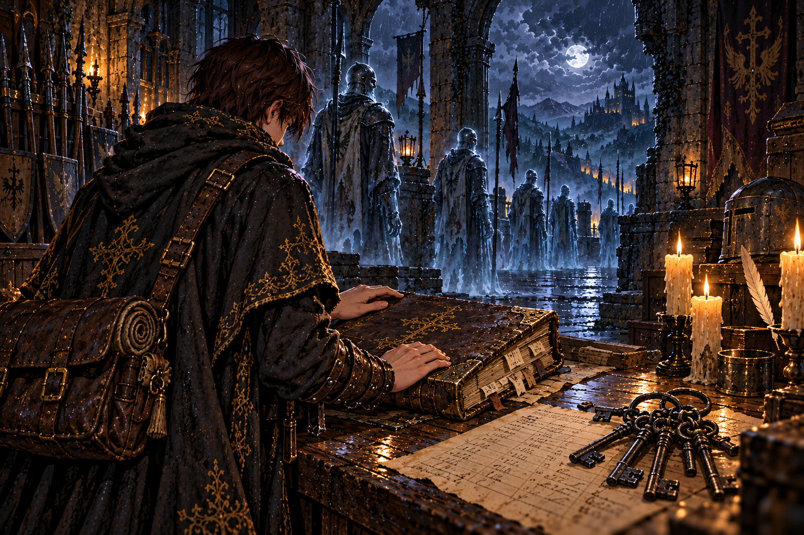
詰所の当直簿は、百年前の頁で止まっていた。援軍を待つ守備隊に届いたのは、持ち場を離れるなという命令だけだった。
古い記録の下に、師の筆跡があった。セラとともに通ったこと、地下牢の鍵を借りたこと。そして、帰れなかった兵へ敬意を向けた短い言葉。
弟子は鍵束を取る前に、帳面を静かに閉じた。師は道具だけを借りたのではない。この場所を守っていた者たちを、見ないふりせず通ったのだ。
02 守れと命じ、迎えなかったreport_w06
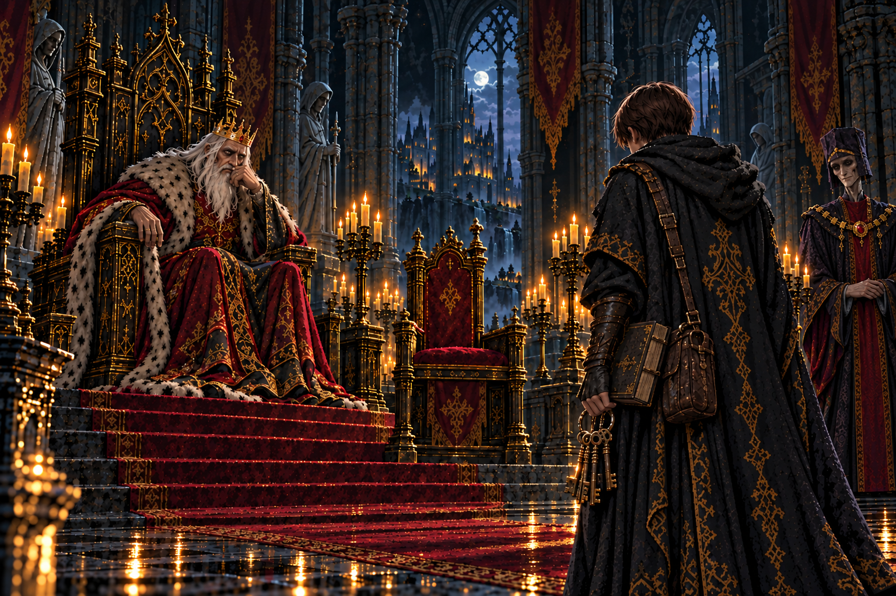
亡兵の隊列を報告すると、王は援軍を送らなかった過去を語った。国を守るためだったという説明が、玉座の脇から添えられた。
だが、守備隊が守り続けたものは何だったのか。地上に戻ることさえできない魂を見たあとでは、理由を聞くだけで納得はできなかった。
王は地下牢の話になると、知らないことにしていると認めた。知らないことと、知らないままでいることの違いが、その日ほどはっきりしたことはなかった。
03 消されなかった名w07_names
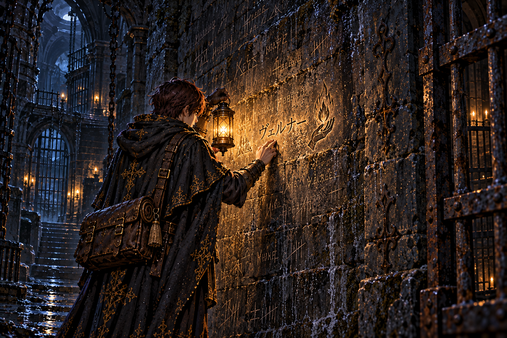
牢壁には、いくつもの名が爪で刻まれていた。誰もが王に仕えた操霊師だった。職を与えられた者たちが、同じ場所で閉じ込められている。
ヴェルナーの名を見つけ、弟子は足を止めた。師が時々語った、そのまた師。魂脈の所在を問うことが、牢へ送られる理由になっていた。
傍らに師の印が添えられている。オルドはこの名を見つけた。弟子もまた、その前へ来た。三人の道が、冷たい壁の上で重なった。
04 声の残る独房w07_sera
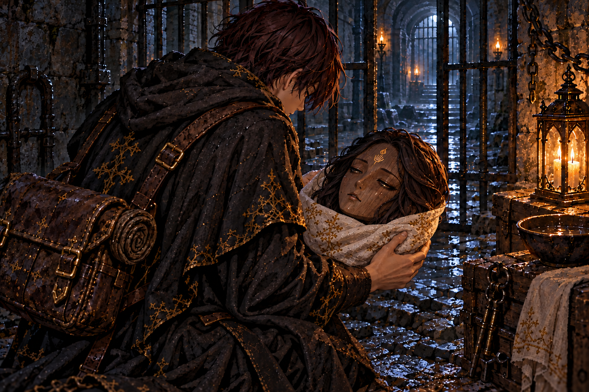
最奥の独房にあった木の頭を持ち上げると、まぶたが動いた。薄い声が師を呼び、それから弟子だと気付いた。セラだった。
言葉は途切れながら、本丸の大穴の下を示した。魂脈に呑まれ、体を分かたれ、水に運ばれたこと。その先を語る力は残っていなかった。
弟子は布を折り、傷ついた顔を包んだ。手がかりとして荷にしまうのではなく、帰る相手として抱えた。館には、この名を知る人が待っている。
05 眠りを守る二つの手irene_sera
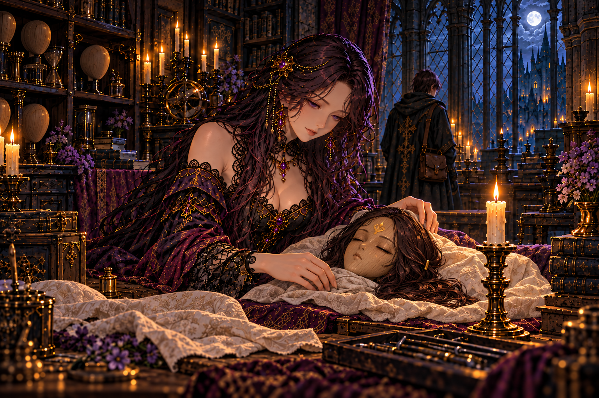
イレーヌはセラの頭を受け取ると、燭台のそばに置いた。呼びかける声は、弟子を迎えた時よりも近く、柔らかかった。
新しい器を仕立てることはできる。それでも、今のセラを起こすことはできない。魂が師の灯に結ばれているために、師の帰りが必要なのだという。
弟子は、二人とも連れ帰るという願いを聞いた。セラの木のまぶたがわずかに動く。灯を守る手は、これから眠る仲間も守っていく。
06 問いを罪にした王国report_w07
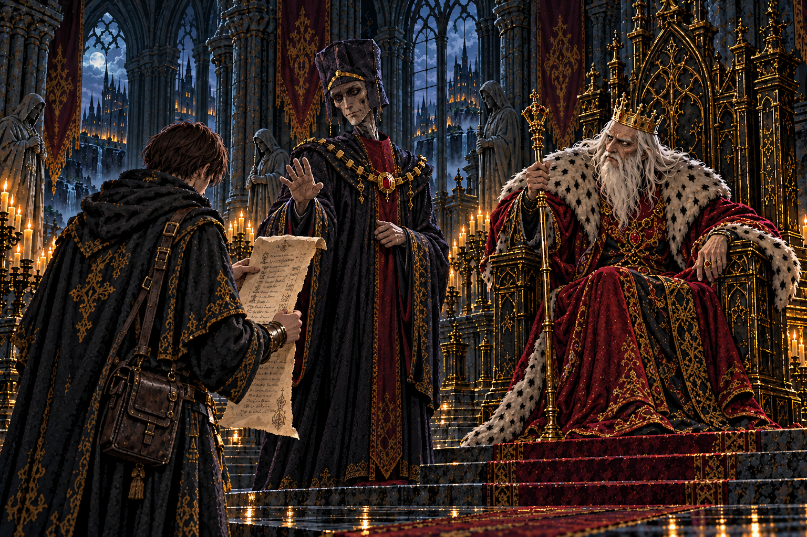
牢の名を一つずつ伝えると、王は先代が操霊師たちを牢へ送ったと語った。魂を扱う者は、隠されているものに近づいてしまうのだという。
宰相が話を止めようとした時、王はその顔を見た。先代の頃から仕えているはずの男に、歳月の跡が見えない。
弟子は、師の師を閉じ込めた牢を出てきたばかりだった。ここで耳にする言葉も、やがて壁に刻まれた名のように、誰かが残さなければ消されるのだろうか。
08 雷鳴の答えを待つ玉座report_w08
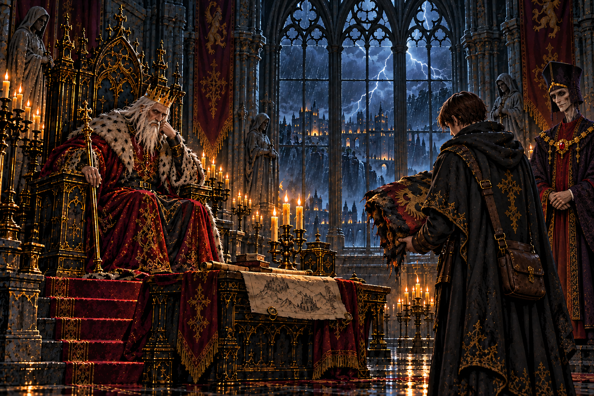
止まない雷雨の理由を伝えると、王はすぐには答えなかった。大手門の上空にあるものより、足元にあるものを確かめた師の姿を思い浮かべているようだった。
百年続いた嵐を、誰も終わらせられなかったのか。それとも、終わらせなかったのか。弟子は、その二つを分けて考え始めていた。
正門を越えた記録が残った。弟子はこれまでに集めた報告を思い返し、本丸へ進むための支度を確かめた。答えを得るための仕事は、まだ続く。
09 百の井戸w09_map
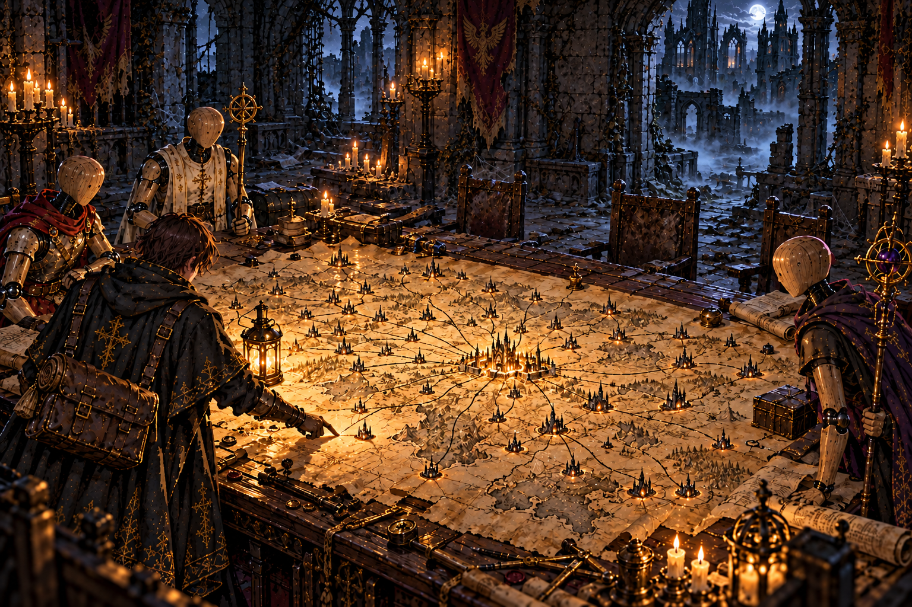
軍議の卓の地図には、迷宮の位置が印されていた。それぞれから伸びる線は、一本ずつ王都へ集まっている。
師の書き込みを読み、弟子は地図を見直した。迷宮は魂を閉じ込めるだけの場所ではない。集め、汲み上げ、送るための仕組みなのだ。
これまで踏んだ地下の道が、卓の上で一つにつながった。先へ進むほど王都へ近づく。地上を離れたつもりで、王国の中心へ向かっていた。
10 砦を捧げた書状mem_w09
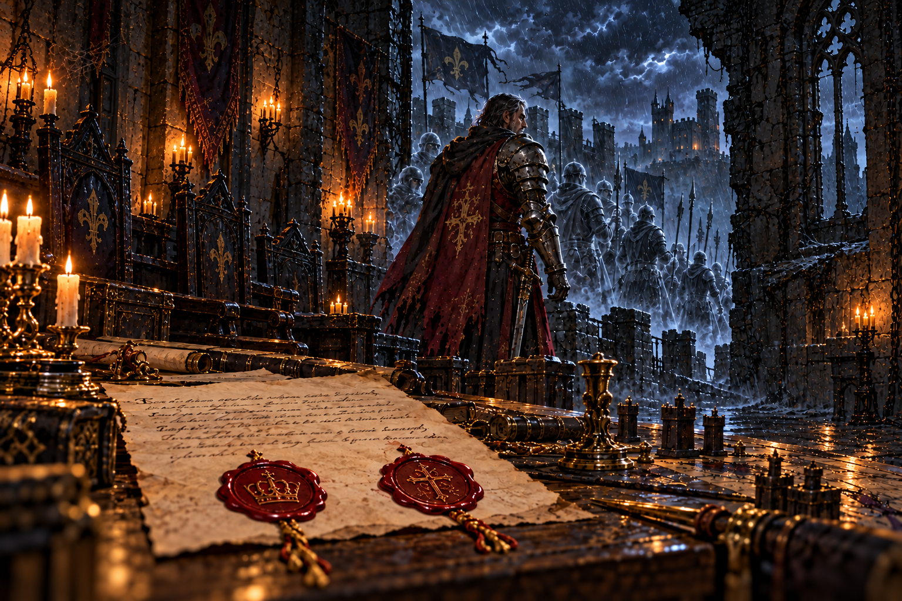
砦の主の記憶は、雷雨の夜へ弟子を連れていった。王都からの書状には、砦を捨てる命令と、守備隊に知らせないという命令が並んでいた。
王家と宰相府、二つの印が兵たちの行く末を決めた。主は部下を置いて逃げず、最後まで同じ場所に残った。誰も救われないことを知りながら。
記憶はさらに、一年前の師を映した。セラを戻そうとする師と、首を振るセラ。二人は本丸の大穴へ降りていった。
弟子は目を開けた。兵の魂を奪ったものと、師が追ったものは同じだった。書状の印を、今度は地上へ持ち帰らなければならない。
11 先代という仮面report_w09
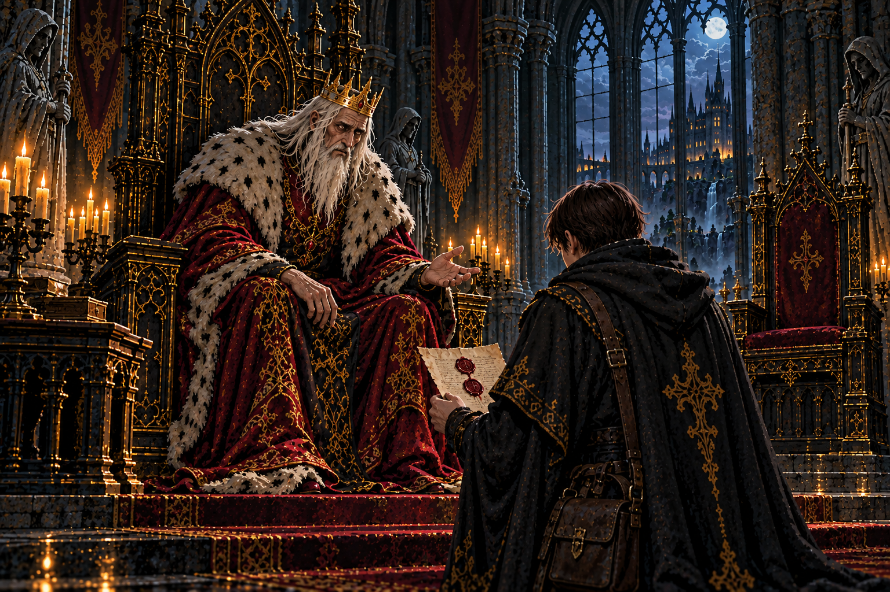
書状の二つの印を告げた日、玉座の脇に宰相はいなかった。王は長く黙ったあと、百年前の命令を出したのは自分だと語った。
先代の王は別人ではなかった。魂脈が運ぶ魂で生き延び、民には代替わりしたと思わせていた。一人の命のために、どれだけの帰れない魂が残ったのだろう。
師はその秘密を知り、王を斬るだけで終わらせようとはしなかった。魂を奪う仕組みそのものを断つために、地下へ向かったのだ。
弟子の前で、王は道を止めなかった。止める資格がないと認めた声には、初めて玉座の上の人間の弱さがあった。
12 両手で囲った夜irene_roots
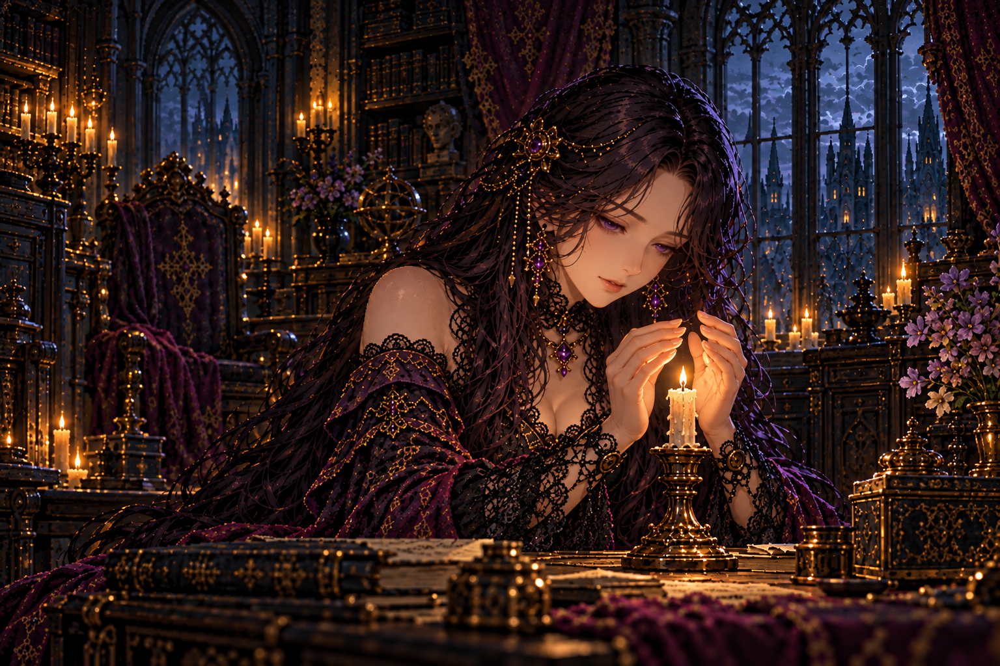
王の告白を聞いたあと、イレーヌは一年前の夜を語った。風もないのに、師の灯が消えかけた夜だった。
彼女は火を両手で囲み、そのまま朝を待った。何が起きているのか分からず、代わりに進むこともできず、ただ明かりの前に残った。
次の朝、火は戻った。それが何を意味するのかを、弟子はこれから探しに行く。館で過ぎた一晩と、迷宮の奥で起きた一瞬をつなぐために。
13 百年の底へch2_end
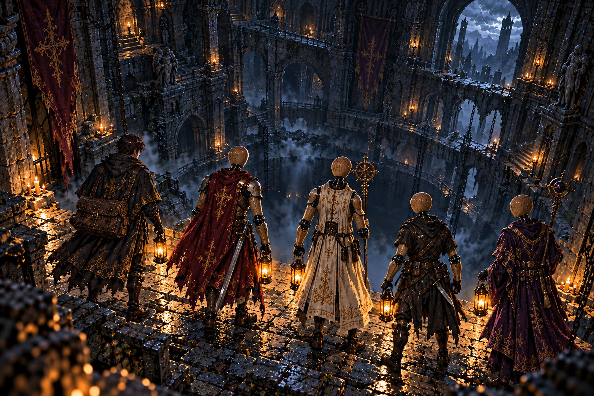
砦を失ったのは戦に敗れた兵だけではなかった。王国は、守ると約束した者を捧げ、そのことを先代の罪という言葉の奥へしまっていた。
独房で聞いたセラの声が、帰るべき場所を思い出させた。師は大穴のさらに下にいる。弟子の旅には、連れ帰りたい顔が増えた。
大穴の縁で、隊の灯が順に揺れた。今度こそ魂脈の根へ。百年前の命令を、今も続く仕事のままにしておくことはできなかった。